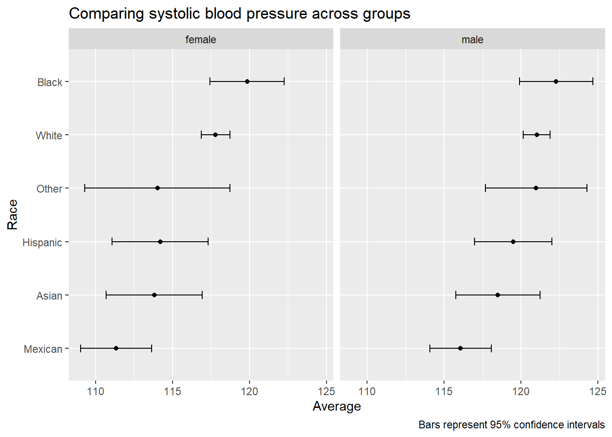
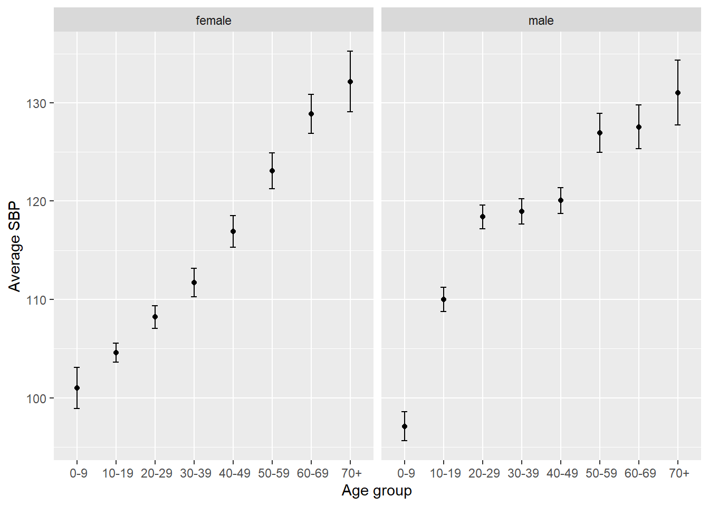
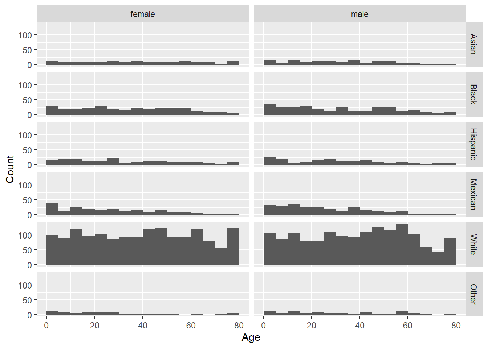
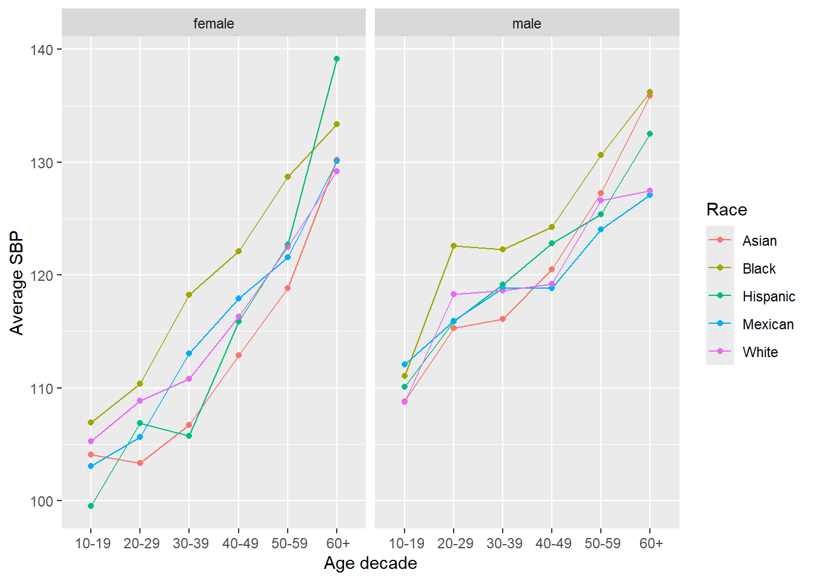
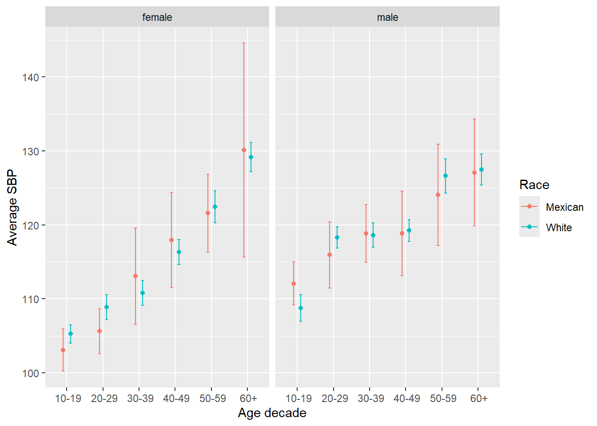
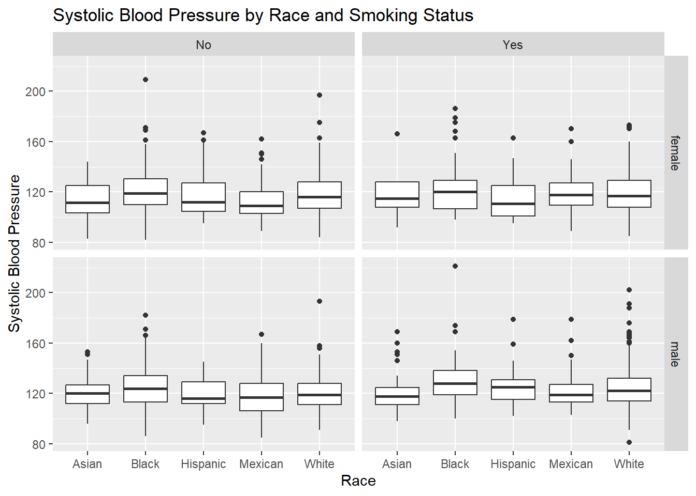

library(dplyr)
library(tidyr)
library(forcats)
library(ggplot2)
library(knitr)
library(NHANES)
options(digits = 2)Problem set 3 — Answer Key
In these exercises, we explore a subset of the NHANES dataset to investigate potential differences in systolic blood pressure (SBP) across groups defined by self-reported race.
Exercises
1
Filter the NHANES data to only include survey year 2011-2012. Save the resulting data frame in dat. It should have 5,000 rows and 76 columns.
dat <- NHANES |>
filter(SurveyYr == "2011_12")
dim(dat)[1] 5000 762
Compute the average and SD of BPSysAve for males and females separately (2 rows; columns: average and SD).
dat |>
filter(!is.na(BPSysAve), !is.na(Gender)) |>
group_by(Gender) |>
summarize(
avg = mean(BPSysAve),
sd = sd(BPSysAve),
.groups = "drop"
) |>
select(Gender, avg, sd) |>
kable()| Gender | avg | sd |
|---|---|---|
| female | 117 | 18 |
| male | 120 | 17 |
3
Compute the average and SD of BPSysAve for each Race3 group, separately for females and males. Arrange from highest to lowest average.
dat |>
filter(!is.na(BPSysAve), !is.na(Gender), !is.na(Race3)) |>
group_by(Gender, Race3) |>
summarize(
avg = mean(BPSysAve),
sd = sd(BPSysAve),
.groups = "drop"
) |>
arrange(desc(avg)) |>
select(Gender, Race3, avg, sd) |>
kable()| Gender | Race3 | avg | sd |
|---|---|---|---|
| male | Black | 122 | 19 |
| male | White | 121 | 17 |
| male | Other | 121 | 14 |
| female | Black | 120 | 19 |
| male | Hispanic | 120 | 15 |
| male | Asian | 118 | 15 |
| female | White | 118 | 18 |
| male | Mexican | 116 | 15 |
| female | Hispanic | 114 | 19 |
| female | Other | 114 | 18 |
| female | Asian | 114 | 18 |
| female | Mexican | 111 | 15 |
4
Add 95% confidence intervals (lower, upper) to the table from Exercise 3 using (X , s/).
dat |>
filter(!is.na(BPSysAve), !is.na(Gender), !is.na(Race3)) |>
group_by(Gender, Race3) |>
summarize(
n = n(),
avg = mean(BPSysAve),
sd = sd(BPSysAve),
.groups = "drop"
) |>
mutate(
lower = avg - 1.96 * sd / sqrt(n),
upper = avg + 1.96 * sd / sqrt(n)
) |>
arrange(desc(avg)) |>
select(Gender, Race3, avg, sd, lower, upper) |>
kable()| Gender | Race3 | avg | sd | lower | upper |
|---|---|---|---|---|---|
| male | Black | 122 | 19 | 120 | 125 |
| male | White | 121 | 17 | 120 | 122 |
| male | Other | 121 | 14 | 118 | 124 |
| female | Black | 120 | 19 | 117 | 122 |
| male | Hispanic | 120 | 15 | 117 | 122 |
| male | Asian | 118 | 15 | 116 | 121 |
| female | White | 118 | 18 | 117 | 119 |
| male | Mexican | 116 | 15 | 114 | 118 |
| female | Hispanic | 114 | 19 | 111 | 117 |
| female | Other | 114 | 18 | 109 | 119 |
| female | Asian | 114 | 18 | 111 | 117 |
| female | Mexican | 111 | 15 | 109 | 114 |
5
Plot group averages (points) and 95% CIs (error bars). Order groups from lowest to highest overall average (average across the two genders). Facet by gender.
dat |>
filter(!is.na(BPSysAve), !is.na(Gender), !is.na(Race3)) |>
group_by(Gender, Race3) |>
summarize(
n = n(),
avg = mean(BPSysAve),
sd = sd(BPSysAve),
.groups = "drop"
) |>
mutate(
lower = avg - 1.96 * sd / sqrt(n),
upper = avg + 1.96 * sd / sqrt(n)
) |>
group_by(Race3) |>
mutate(overall_avg = mean(avg)) |>
ungroup() |>
mutate(Race3 = fct_reorder(Race3, overall_avg)) |>
ggplot(aes(x = Race3, y = avg)) +
geom_point() +
geom_errorbar(aes(ymin = lower, ymax = upper), width = 0.15) +
facet_wrap(~ Gender) +
coord_flip() +
labs(
x = "Race",
y = "Average",
title = "Comparing systolic blood pressure across groups",
caption = "Bars represent 95% confidence intervals"
)
6
Make a table/plot like Exercise 4 but by Gender and AgeDecade (chronological). Filter out missing AgeDecade. Separate plots for males and females.
dat |>
filter(!is.na(BPSysAve), !is.na(Gender), !is.na(AgeDecade)) |>
group_by(Gender, AgeDecade) |>
summarize(
n = n(),
avg = mean(BPSysAve),
sd = sd(BPSysAve),
.groups = "drop"
) |>
mutate(
lower = avg - 1.96 * sd / sqrt(n),
upper = avg + 1.96 * sd / sqrt(n),
AgeDecade = fct_inorder(AgeDecade)
) |>
ggplot(aes(x = AgeDecade, y = avg)) +
geom_point() +
geom_errorbar(aes(ymin = lower, ymax = upper), width = 0.15) +
facet_wrap(~ Gender) +
labs(x = "Age group", y = "Average SBP")
7
Histogram of Age by Race3, stacked vertically, two columns for males/females. Use 5-year bins up to 80.
dat |>
filter(!is.na(Age), !is.na(Race3), !is.na(Gender), Age <= 80) |>
ggplot(aes(x = Age)) +
geom_histogram(binwidth = 5, boundary = 0) +
facet_grid(Race3 ~ Gender) +
labs(x = "Age", y = "Count")
Comment: The age distributions differ by race group. In particular, some groups (often including the Mexican group) tend to have a younger distribution than the White group. Since SBP increases with age, a younger age distribution can lower the overall mean SBP even if age-specific SBP patterns are similar—so age is a plausible confounder.
8
Compute median age and percent younger than 18 for each Race3 group. Order by median age.
dat |>
filter(!is.na(Age), !is.na(Race3)) |>
group_by(Race3) |>
summarize(
median_age = median(Age),
children = mean(Age < 18) * 100,
.groups = "drop"
) |>
arrange(median_age) |>
select(Race3, median_age, children) |>
kable()| Race3 | median_age | children |
|---|---|---|
| Mexican | 22 | 40 |
| Other | 22 | 38 |
| Hispanic | 28 | 31 |
| Black | 33 | 29 |
| Asian | 35 | 25 |
| White | 41 | 22 |
Explanation: If the Mexican group has a lower median age and a larger share of children than the White group, the Mexican group’s overall SBP average will be lower partly because it includes more younger individuals. Since SBP rises with age, comparing raw averages without adjusting for age can exaggerate differences between race groups.
9
Write a function to compute the number of observations in each Gender × AgeDecade × Race3 cell (remove missing BPSysAve first), include zero-count cells using complete, then show cells with fewer than 5 observations.
count_cells <- function(df) {
df |>
filter(!is.na(BPSysAve), !is.na(Gender), !is.na(AgeDecade), !is.na(Race3)) |>
count(Gender, AgeDecade, Race3, name = "n") |>
complete(Gender, AgeDecade, Race3, fill = list(n = 0))
}
count_cells(dat) |>
filter(n < 5) |>
arrange(n, Gender, AgeDecade, Race3) |>
kable()| Gender | AgeDecade | Race3 | n |
|---|---|---|---|
| male | 70+ | Other | 0 |
| female | 0-9 | Asian | 2 |
| female | 50-59 | Other | 2 |
| female | 60-69 | Other | 2 |
| male | 0-9 | Asian | 2 |
| male | 0-9 | Other | 2 |
| female | 70+ | Mexican | 3 |
| male | 70+ | Asian | 3 |
| male | 70+ | Mexican | 3 |
| female | 40-49 | Other | 4 |
10
Redefine dat with:
- SurveyYr 2011-2012
- remove missing
AgeDecade - remove 0–9 group
- combine 60–69 and 70+ into 60+
- remove
Otherfrom Race3 - rename Race3 to Race
dat <- NHANES |>
filter(SurveyYr == "2011_12") |>
filter(!is.na(AgeDecade)) |>
filter(AgeDecade != " 0-9") |>
mutate(AgeDecade = fct_collapse(AgeDecade, ` 60+` = c(" 60-69", " 70+"))) |>
filter(!is.na(Race3), Race3 != "Other") |>
rename(Race = Race3)
dat |>
summarize(rows = n(), cols = ncol(dat)) |>
kable()| rows | cols |
|---|---|
| 3996 | 76 |
11
Plot average SBP by age decade, with race groups in color and lines connecting points. Two plots (male/female).
dat |>
filter(!is.na(BPSysAve), !is.na(AgeDecade), !is.na(Race), !is.na(Gender)) |>
group_by(Gender, Race, AgeDecade) |>
summarize(avg = mean(BPSysAve), .groups = "drop") |>
mutate(AgeDecade = fct_inorder(AgeDecade)) |>
ggplot(aes(x = AgeDecade, y = avg, color = Race, group = Race)) +
geom_point() +
geom_line() +
facet_wrap(~ Gender) +
labs(x = "Age decade", y = "Average SBP")
12
Pick two groups that are consistently different, remake the plot for only these two groups, add confidence intervals, remove lines, and dodge by group within each age decade.
(Here we choose White and Mexican.)
group1 <- "White"
group2 <- "Mexican"
dat |>
filter(!is.na(BPSysAve), !is.na(AgeDecade), !is.na(Race), !is.na(Gender)) |>
filter(Race %in% c(group1, group2)) |>
group_by(Gender, Race, AgeDecade) |>
summarize(
n = n(),
avg = mean(BPSysAve),
sd = sd(BPSysAve),
.groups = "drop"
) |>
mutate(
lower = avg - 1.96 * sd / sqrt(n),
upper = avg + 1.96 * sd / sqrt(n),
AgeDecade = fct_inorder(AgeDecade)
) |>
ggplot(aes(x = AgeDecade, y = avg, color = Race)) +
geom_point(position = position_dodge(width = 0.4)) +
geom_errorbar(
aes(ymin = lower, ymax = upper),
width = 0.15,
position = position_dodge(width = 0.4)
) +
facet_wrap(~ Gender) +
labs(x = "Age decade", y = "Average SBP")
Comment: Across many age decades, the two selected groups show a fairly consistent separation, although uncertainty varies by decade. Confidence intervals help judge whether observed differences are large relative to sampling variability in each age stratum.
13
For the two groups selected above, compute the difference in average SBP (White − Mexican) for each age stratum. Table columns: age strata, difference (female), difference (male).
group1 <- "White"
group2 <- "Mexican"
dat |>
filter(!is.na(BPSysAve), !is.na(AgeDecade), Race %in% c(group1, group2)) |>
group_by(Gender, AgeDecade, Race) |>
summarize(avg = mean(BPSysAve), .groups = "drop") |>
pivot_wider(names_from = Race, values_from = avg) |>
mutate(diff = .data[[group1]] - .data[[group2]]) |>
select(Gender, AgeDecade, diff) |>
pivot_wider(names_from = Gender, values_from = diff) |>
mutate(AgeDecade = fct_inorder(AgeDecade)) |>
arrange(AgeDecade) |>
kable()| AgeDecade | female | male |
|---|---|---|
| 10-19 | 2.18 | -3.32 |
| 20-29 | 3.25 | 2.36 |
| 30-39 | -2.27 | -0.23 |
| 40-49 | -1.61 | 0.38 |
| 50-59 | 0.88 | 2.57 |
| 60+ | -0.95 | 0.40 |
14
Create a table showing BMI summary by Race and Gender (n, average, SD). Remove missing BMI. Order by average BMI.
dat |>
filter(!is.na(BMI), !is.na(Race), !is.na(Gender)) |>
group_by(Race, Gender) |>
summarize(
n = n(),
avg_bmi = mean(BMI),
sd_bmi = sd(BMI),
.groups = "drop"
) |>
arrange(avg_bmi) |>
kable()| Race | Gender | n | avg_bmi | sd_bmi |
|---|---|---|---|---|
| Asian | female | 118 | 24 | 5.3 |
| Asian | male | 118 | 25 | 5.1 |
| Black | male | 238 | 27 | 6.9 |
| Hispanic | female | 147 | 27 | 6.0 |
| White | female | 1327 | 27 | 7.3 |
| Mexican | female | 161 | 28 | 7.4 |
| White | male | 1289 | 28 | 6.1 |
| Mexican | male | 206 | 28 | 5.5 |
| Hispanic | male | 123 | 29 | 5.6 |
| Black | female | 242 | 31 | 8.7 |
15
Create a summary table of average SBP by Smoke100 for each Race × Gender. Filter out missing Smoke100 or BPSysAve. Arrange by Race, Gender, Smoke100.
dat |>
filter(!is.na(Smoke100), !is.na(BPSysAve), !is.na(Race), !is.na(Gender)) |>
group_by(Race, Gender, Smoke100) |>
summarize(
n = n(),
avg_sbp = mean(BPSysAve),
sd_sbp = sd(BPSysAve),
.groups = "drop"
) |>
arrange(Race, Gender, Smoke100) |>
kable()| Race | Gender | Smoke100 | n | avg_sbp | sd_sbp |
|---|---|---|---|---|---|
| Asian | female | No | 90 | 113 | 14 |
| Asian | female | Yes | 9 | 122 | 27 |
| Asian | male | No | 54 | 121 | 14 |
| Asian | male | Yes | 40 | 122 | 18 |
| Black | female | No | 152 | 121 | 17 |
| Black | female | Yes | 44 | 124 | 22 |
| Black | male | No | 95 | 124 | 17 |
| Black | male | Yes | 81 | 131 | 21 |
| Hispanic | female | No | 87 | 118 | 19 |
| Hispanic | female | Yes | 20 | 116 | 18 |
| Hispanic | male | No | 55 | 120 | 12 |
| Hispanic | male | Yes | 52 | 124 | 15 |
| Mexican | female | No | 81 | 112 | 15 |
| Mexican | female | Yes | 30 | 120 | 17 |
| Mexican | male | No | 84 | 117 | 15 |
| Mexican | male | Yes | 63 | 122 | 15 |
| White | female | No | 600 | 118 | 17 |
| White | female | Yes | 487 | 120 | 16 |
| White | male | No | 519 | 120 | 13 |
| White | male | Yes | 574 | 125 | 17 |
Optional Exercises
16
Box plots comparing SBP distributions across race groups. Separate smokers/non-smokers; facet by gender.
dat |>
filter(!is.na(BPSysAve), !is.na(Smoke100), !is.na(Race), !is.na(Gender)) |>
ggplot(aes(x = Race, y = BPSysAve)) +
geom_boxplot() +
facet_grid(Gender ~ Smoke100) +
labs(
x = "Race",
y = "Systolic Blood Pressure",
title = "Systolic Blood Pressure by Race and Smoking Status"
)
17
Counts for each AgeDecade × Race × Gender combination with fewer than 10 observations (only non-missing BPSysAve).
dat |>
filter(!is.na(BPSysAve), !is.na(AgeDecade), !is.na(Race), !is.na(Gender)) |>
count(AgeDecade, Race, Gender, name = "n") |>
filter(n < 10) |>
arrange(n, AgeDecade, Race, Gender) |>
kable()| AgeDecade | Race | Gender | n |
|---|---|---|---|
| 60+ | Mexican | female | 9 |
18
For each Race × Gender, compute: overall avg SBP, avg age, % smokers, avg BMI, and n. Filter out missing BPSysAve, Age, Smoke100, BMI. Round numeric values to 1 decimal and arrange by race then gender.
dat |>
filter(!is.na(BPSysAve), !is.na(Age), !is.na(Smoke100), !is.na(BMI), !is.na(Race), !is.na(Gender)) |>
group_by(Race, Gender) |>
summarize(
n = n(),
avg_sbp = mean(BPSysAve),
avg_age = mean(Age),
pct_smoke = mean(Smoke100 == "Yes") * 100,
avg_bmi = mean(BMI),
.groups = "drop"
) |>
mutate(
avg_sbp = round(avg_sbp, 1),
avg_age = round(avg_age, 1),
pct_smoke = round(pct_smoke, 1),
avg_bmi = round(avg_bmi, 1)
) |>
arrange(Race, Gender) |>
kable()| Race | Gender | n | avg_sbp | avg_age | pct_smoke | avg_bmi |
|---|---|---|---|---|---|---|
| Asian | female | 96 | 114 | 46 | 9.4 | 25 |
| Asian | male | 93 | 121 | 42 | 41.9 | 26 |
| Black | female | 193 | 122 | 44 | 22.3 | 33 |
| Black | male | 176 | 127 | 45 | 46.0 | 29 |
| Hispanic | female | 107 | 118 | 44 | 18.7 | 29 |
| Hispanic | male | 107 | 122 | 41 | 48.6 | 30 |
| Mexican | female | 111 | 114 | 39 | 27.0 | 30 |
| Mexican | male | 144 | 120 | 39 | 43.8 | 30 |
| White | female | 1078 | 119 | 48 | 44.8 | 28 |
| White | male | 1092 | 123 | 47 | 52.6 | 29 |